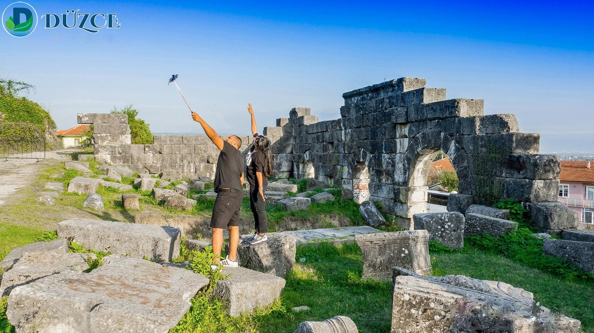
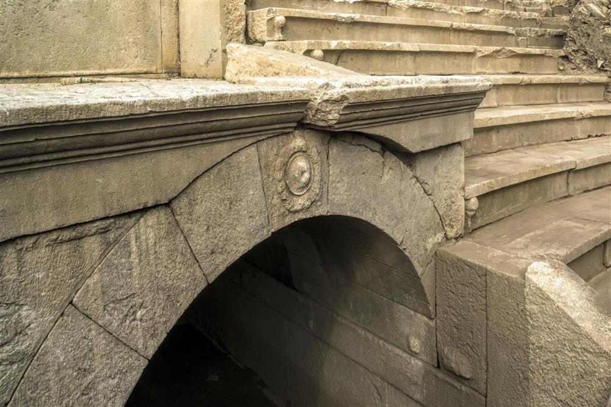

Konuralp kentinin de içinde bulunduğu bölge Herodot, Xenophon ve Strabon gibi antik çağ yazarlarına göre M.Ö. 1200-700 yılları arasında Trakyalı halkların yurdu olarak anılır. Klasik dönemde Megaralılar tarafından ‘’Kieros’’ ismi ile kurulduğu bilinmektedir. M.Ö. 183’te Bithynia Kralı I Prusias tarafından ele geçirilen kent Melen (Hypium) çayının üstündeki Prusias anlamına gelen ’’Prusias ad Hypium’’ adını alır. Bölge M.Ö. 74 yılında Bithynia Kralı IV. Nikomedes’in döneminde Roma yönetimine geçer. M.S. I. yüzyılda gelişmeye başlayan kent, M.S. II. ve III. yüzyıllar arası sosyal refahta doruğa çıkmıştır.
Antik kentte ele geçen ithaf yazıtlarında, Prusias Ad Hypium Kenti’nin su kemerleri, agora, boule, tiyatro, hamam gibi diğer birçok önemli anıtsal yapılarının birçoğunun bu dönemlerde inşa edildiği bilinmektedir. Ortaçağda da kent hakkında yazıtlar ve dini toplantı kayıtlarında zengin bilgi elde edilmektedir. Erken Hristiyanlık dönemi ve sonrasında da kent canlılığını devam ettirmiştir. Prusias ad Hypium, Orhan Gazi’nin komutanlarından olan Konur Alp Bey tarafından 1323 yılında ele geçirilerek Osmanlı topraklarına katılmıştır.

Antik Tiyatro;
Tiyatronun birinci kademesinde oturma sıraları görünmüyorsa da yaklaşık 17 oturma sıralık bir boyuta sahiptir. Orta yoldan çok dik merdivenlerle bağlanan ikinci kademenin 15 sırası yerinde olmakla birlikte, aslında 4 sıralık daha yer vardır. Böylece tiyatro yaklaşık toplam 36 oturma sıralıdır. Işınsal yol kenarlarındaki sıra başlarına aslanpençeleri işlenmiştir. Işınsal yol basamakları ile süslemeleri Side Tiyatrosu’nda görüldüğü gibi uzunca tek bir taştan yapılmıştır. 5.978 m2 alana sahip, 100 metre uzunluğunda, 74 metre eninde bir alana yayılan tiyatronun kapasitesi yaklaşık 10.000 kişiliktir.

Atlı Kapı;
Kemerkasım Su Kemerleri;
Roma Köprüsü;
Batı Sur Duvarları;